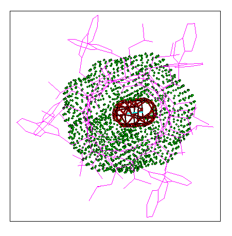

Pore Dimensions of Ion Channels: A capsule fitting inside the pore of
gramicidin


A capsule fitting inside the pore of
gramicidin

The capsule is shown as a red grid surface fitting inside the
van der Waals surface of the pore lining residues, shown
as green dots. The axis of the capsule is shown as a light
blue line. The view is almost exactly down the channel
vector.
Oliver S. Smart
(last modified 23/9/96)